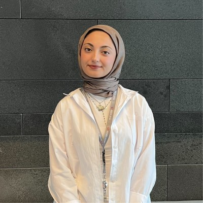
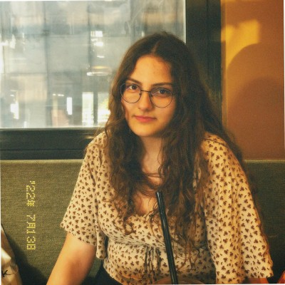

ManifestAI
Akıllı Afet Koordinasyon ve Teyit Platformu
Sosyal medyadan akan yapılandırılmamış afet verilerini Türkçe BERT ve bulanık konum algoritmalarıyla anlık olarak doğrulayıp canlı kriz haritalarına dönüştüren yapay zekâ destekli karar destek platformudur.
Takım Üyeleri

Esmanur Ulu
Pipeline & Integration Specialist
TOBB ETÜ Bilgisayar Mühendisliği Öğrencisi. Sistem entegrasyonu ve veri akış altyapı sorumlusu.
LinkedIn Profili
İclal Zeynep Kaya
GIS & Database Specialist
TOBB ETÜ Bilgisayar Mühendisliği Öğrencisi. Veritabanı tasarımı ve coğrafi bilgi sistemleri sorumlusu.
LinkedIn ProfiliNisa Naz Keleşoğlu
Backend & API Developer
TOBB ETÜ Bilgisayar Mühendisliği Öğrencisi. Arka yüz servisleri ve API geliştirme sorumlusu.
LinkedIn ProfiliZeynep Saçaklı
AI / NLP Lead & Model Engineer
TOBB ETÜ Yapay Zekâ Mühendisliği Öğrencisi. Yapay zekâ, doğal dil işleme ve metin analizi sorumlusu.
LinkedIn Profili
Zeynep Yetkin
Frontend & UI/UX Lead
TOBB ETÜ Bilgisayar Mühendisliği Öğrencisi. Ön yüz arayüz tasarımı ve kullanıcı deneyimi sorumlusu.
LinkedIn ProfiliProje Hakkında
Problem: Afet anlarında sosyal medyada oluşan kaotik, yapılandırılmamış yardım çağrıları bilgi kirliliğine yol açmakta ve takipçi sayısı düşük kullanıcıların kritik çağrıları görünmez kalmaktadır.
Çözüm: ManifestAI; akan verileri Türkçe BERT (BERTURK) ve Levenshtein bulanık konum algoritmalarıyla anlık olarak işleyip, gürültüyü eleyen ve doğrulanmış lojistik ihtiyaçları ilçe düzeyinde canlı kriz haritalarına dönüştüren yapay zekâ destekli bir karar destek sistemidir.
Sistem Mimarisi ve Arayüz Taslağı
Aşağıda sistemin yüksek seviyeli mimarisi ve ön yüz navigasyon akışı yer almaktadır:
Akademik ve Teknik Raporlar
Proje süresince hazırlanan dökümanlara aşağıdaki bağlantılardan erişebilirsiniz:
| Rapor Adı | PDF Formatı | DOCX Formatı |
|---|---|---|
| Project Proposal (Proje Teklifi) | İndir (PDF) | İndir (DOCX) |
| Project Specifications Report (Gereksinim Raporu) | İndir (PDF) | İndir (DOCX) |
| Analysis Report (Analiz Raporu) | İndir (PDF) | İndir (DOCX) |
| Proje Kısıt ve Etkiler Dokümanı (PKE-Plan) | İndir (PDF) | İndir (DOCX) |